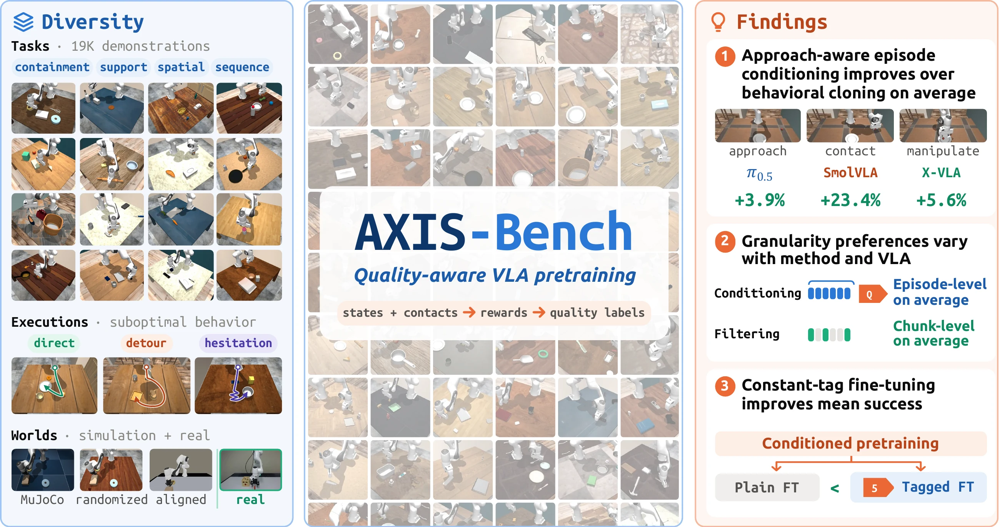

Finding 01
Episode conditioning improves mean success
Approach-aware episode conditioning improves mean success over plain BC across all three tested VLAs.
‡Corresponding author

Replayable demonstrations and state-based quality labels connect controlled pretraining studies with real-world validation.
A reference baseline and sim-to-real pretraining recipe for experiments in your own DROID-compatible workspace.
See how quality definition, label granularity, and fine-tuning choices affect policy performance.